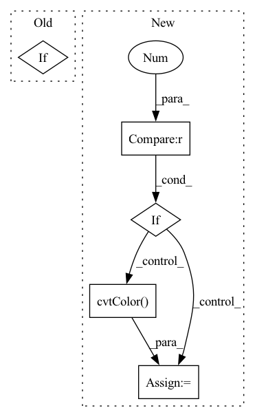

Pattern ID :5760
Before Change
super().__init__(data)
self.dtype = dtype
if data is not None:
self.data = data
@propertyAfter Change
raise ValueError("3D dimensional images are expected")
if guess_format:
// If channels are found last, assume OpenCV format
if data.shape[2] == 1 or data.shape[2] == 3:
data = cv2.cvtColor( data, cv2.COLOR_BGR2RGB)
data = np.transpose(data, (2, 0, 1))
self.data = data
@propertyIn pattern: SUPERPATTERN
Frequency: 3
Non-data size: 5
Instances Fragment ID: 20182595
Project Name: opendr-eu/opendr
Commit Name: b8e43db57c8bfbedee997f4a4dc030cb0cb74aa9
Time: 2021-12-06
Author: passalis@csd.auth.gr
File Name: src/opendr/engine/data.py
M Class Name: Image
N Class Name: Image
M Method Name: __init__(4)
N Method Name: __init__(3)
M Parent Class: Data
N Parent Class: Data
M File Name: src/opendr/engine/data.py
N File Name: src/opendr/engine/data.py
M Start Line: 222
M End Line: 225
N Start Line: 221
N End Line: 242
Before Change
np_img = cv2.imdecode(nparr, cv2.IMREAD_COLOR)
np_img = cv2.cvtColor(np_img, cv2.COLOR_BGR2RGB)
if norm:
np_img = np.transpose(np_img, (2, 0, 1))
np_img = np_img.astype("float32") / 255
After Change
np_img = cv2.imdecode(nparr, cv2.IMREAD_GRAYSCALE)
else:
np_img = cv2.imdecode(nparr, cv2.IMREAD_UNCHANGED)
if len(np_img.shape) == 3 and np_img.shape[2] == 4:
np_img = cv2.cvtColor( np_img, cv2.COLOR_BGRA2RGB)
else:
np_img = cv2.cvtColor(np_img, cv2.COLOR_BGR2RGB)
return np_img Fragment ID: 20182594
Project Name: sanster/lama-cleaner
Commit Name: 1e2c8fd34865e618efe98993ab5f8a77d0f9d09e
Time: 2021-11-29
Author: cwq1913@gmail.com
File Name: lama_cleaner/helper.py
M Class Name: AnonimousClass
N Class Name: AnonimousClass
M Method Name: load_img(2)
N Method Name: load_img(3)
M Parent Class:
N Parent Class:
M File Name: lama_cleaner/helper.py
N File Name: lama_cleaner/helper.py
M Start Line: 43
M End Line: 55
N Start Line: 44
N End Line: 54
Before Change
img = cv2.imread(img_file)
img = cv2.cvtColor(img, cv2.COLOR_BGR2RGB)
// following two cases are not explained in the original repo
if img.shape[0] == 2:
img = img[0]
if img.shape[2] == 4:
img = img[:, :, :3]After Change
elif type(image) == np.ndarray:
if len(image.shape) == 2: // grayscale
img = cv2.cvtColor(image, cv2.COLOR_GRAY2BGR)
elif len(image.shape) == 3 and image.shape[2] == 3: // BGRscale
img = image
elif len(image.shape) == 3 and image.shape[2] == 4: // RGBAscale
img = image[:, :, :3]
img = cv2.cvtColor( img, cv2.COLOR_RGB2BGR)
return img
Fragment ID: 20182602
Project Name: fcakyon/craft-text-detector
Commit Name: 3a31dc821230f93229994c2075928fc374d80cf7
Time: 2021-04-07
Author: 34196005+fcakyon@users.noreply.github.com
File Name: craft_text_detector/image_utils.py
M Class Name: AnonimousClass
N Class Name: AnonimousClass
M Method Name: read_image(1)
N Method Name: read_image(1)
M Parent Class:
N Parent Class:
M File Name: craft_text_detector/image_utils.py
N File Name: craft_text_detector/image_utils.py
M Start Line: 11
M End Line: 19
N Start Line: 11
N End Line: 29